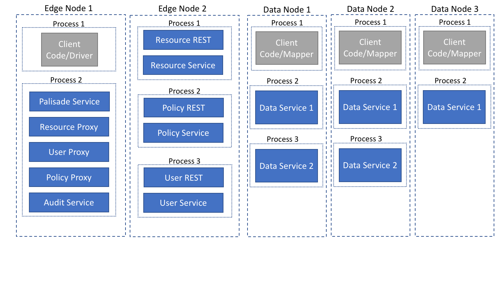

How might the system be deployed?
Micro-service deployment using REST APIs

This deployment shows how you might have a Palisade service that can use a local audit service component but uses proxies to ask other micro-services for the other information that it requires.
Those other micro-services could be running on different VMs/machines.
Monolith deployment

This deployment shows that the design works if you want to have all of your services running in the same JVM.
This deployment might be useful for instance, in integration test scenarios.